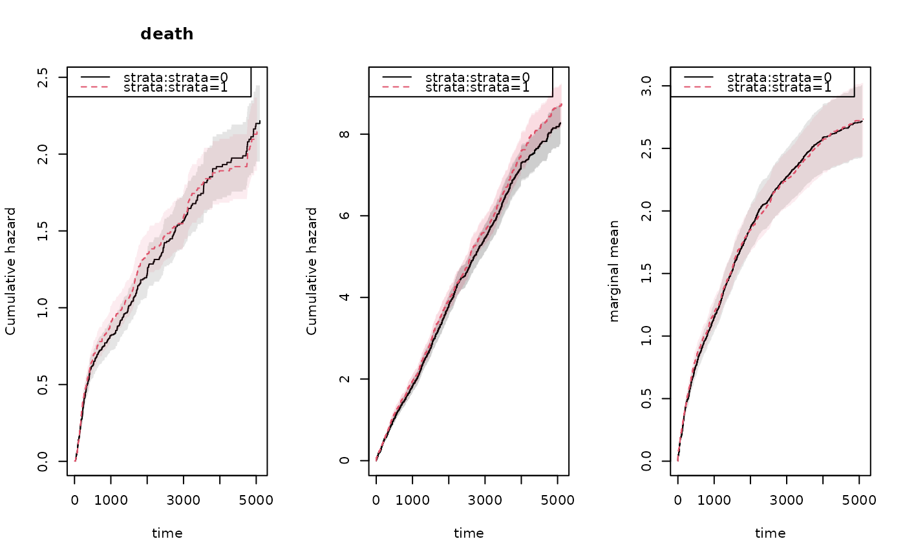

R/recurrent.marginal.R
recurrentMarginal.RdFast Marginal means of recurrent events. Using the Lin and Ghosh (2000) standard errors. Fitting two models for death and recurent events these are combined to prducte the estimator $$ \int_0^t S(u|x=0) dR(u|x=0) $$ the mean number of recurrent events, here $$ S(u|x=0) $$ is the probability of survival for the baseline group, and $$ dR(u|x=0) $$ is the hazard rate of an event among survivors for the baseline. Here $$ S(u|x=0) $$ is estimated by $$ exp(-\Lambda_d(u|x=0) $$ with $$\Lambda_d(u|x=0) $$ being the cumulative baseline for death.
recurrentMarginal(recurrent, death, fixbeta = NULL, km = TRUE, ...)
| recurrent | phreg object with recurrent events |
|---|---|
| death | phreg object with deaths |
| fixbeta | to force the estimation of standard errors to think of regression coefficients as known/fixed |
| km | if true then uses Kaplan-Meier for death, otherwise exp(- Nelson-Aalen ) |
| ... | Additional arguments to lower level funtions |
Assumes no ties in the sense that jump times needs to be unique, this is particularly so for the stratified version.
Ghosh and Lin (2002) Nonparametric Analysis of Recurrent events and death, Biometrics, 554--562.
data(base1cumhaz) data(base4cumhaz) data(drcumhaz) dr <- drcumhaz base1 <- base1cumhaz base4 <- base4cumhaz rr <- simRecurrent(1000,base1,death.cumhaz=dr) rr$x <- rnorm(nrow(rr)) rr$strata <- floor((rr$id-0.01)/500) ## to fit non-parametric models with just a baseline xr <- phreg(Surv(entry,time,status)~cluster(id),data=rr) dr <- phreg(Surv(entry,time,death)~cluster(id),data=rr) par(mfrow=c(1,3)) bplot(dr,se=TRUE) title(main="death") bplot(xr,se=TRUE) ### robust standard errors rxr <- robust.phreg(xr,fixbeta=1) bplot(rxr,se=TRUE,robust=TRUE,add=TRUE,col=4) ## marginal mean of expected number of recurrent events out <- recurrentMarginal(xr,dr) bplot(out,se=TRUE,ylab="marginal mean",col=2)######################################################################## ### with strata ################################################## ######################################################################## xr <- phreg(Surv(entry,time,status)~strata(strata)+cluster(id),data=rr) dr <- phreg(Surv(entry,time,death)~strata(strata)+cluster(id),data=rr) par(mfrow=c(1,3)) bplot(dr,se=TRUE) title(main="death") bplot(xr,se=TRUE) rxr <- robust.phreg(xr,fixbeta=1) bplot(rxr,se=TRUE,robust=TRUE,add=TRUE,col=1:2) out <- recurrentMarginal(xr,dr) bplot(out,se=TRUE,ylab="marginal mean",col=1:2)######################################################################## ### cox case ################################################## ######################################################################## xr <- phreg(Surv(entry,time,status)~x+cluster(id),data=rr) dr <- phreg(Surv(entry,time,death)~x+cluster(id),data=rr) par(mfrow=c(1,3)) bplot(dr,se=TRUE) title(main="death") bplot(xr,se=TRUE) rxr <- robust.phreg(xr) bplot(rxr,se=TRUE,robust=TRUE,add=TRUE,col=1:2) out <- recurrentMarginal(xr,dr) bplot(out,se=TRUE,ylab="marginal mean",col=1:2)######################################################################## ### CIF ############################################################# ######################################################################## ### use of function to compute cumulative incidence (cif) with robust standard errors data(bmt) bmt$id <- 1:nrow(bmt) xr <- phreg(Surv(time,cause==1)~cluster(id),data=bmt) dr <- phreg(Surv(time,cause!=0)~cluster(id),data=bmt) out <- recurrentMarginal(xr,dr,km=TRUE) bplot(out,se=TRUE,ylab="cumulative incidence")